사회조사분석사-2급 (2015-08-16 기출문제)
1과목: 조사방법론 I
1. 면접조사에 대한 설명과 가장 거리가 먼 것은?
- 우편조사에 비해서 응답률이 높다.
- 무응답 문항을 줄일 수 있다.
- 면접자에 의한 편의(bias)가 발생할 수 있다.
- 전화조사에 비해 조사자에 대한 감독이 용이하다.
(정답률: 65%)

2. 조사 연구를 하는 주요 목적과 가장 거리가 먼 것은?
- 기술
- 설명
- 탐색
- 실험
(정답률: 74%)
3. 실험설계에서 측정이 반복되면서 섞여지는 학습효과로 인해 실험대상자의 반응에 영향을 미치게 되는 것은?
- 성숙효과
- 시험효과
- 조사도구효과
- 선별효과
(정답률: 58%)
4. 표면적으로 인과관계인 것처럼 보이던 두 변수 X와 Y가 검정요인 Z를 도입한 후 두 변사 사이의 관계가 사라졌다. X와 Y의 관계는?
- 공변관계(covariation)
- 허위적관계(spurious relation)
- 종속관계(dependent relation)
- 상관관계(correlation)
(정답률: 80%)
5. 2차 자료의 특징이 아닌 것은?
- 상대적으로 수집에 드는 시간과 비용이 적게 든다.
- 현재의 연구와 직접적인 연관이 있어 분석결과를 바로 사용할 수 있다.
- 자료의 적합성을 평가하여 연구에 활용해야 한다.
- POS데이터, 상업용자료, 연구간행물 등이 2차 자료에 해당한다.
(정답률: 77%)
6. 가설설정시 유의해야 할 사항으로 틀린 것은?
- 가설은 경험적으로 검증할 수 있어야 한다.
- 연구문제를 해결할 수 있어야 한다.
- 동의반복적(tautological)이어야 한다.
- 검증결과는 가능한 한 광범위하게 적용 될 수 있어야 한다.
(정답률: 77%)
7. 다음 질문문항과 가장 관련이 없는 것은?
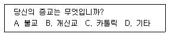
- 폐쇄형 질문
- 선다형 질문
- 사실 질문
- 평가 질문
(정답률: 59%)
8. 우편조사를 실시할 때 설문지의 회수율을 높이기 위해 사용하는 방법으로 틀린 것은?
- 설문지를 발송하기 전에 응답자와 우편전화를 통해 사전에 접촉을 한다.
- 표지에 조사를 실시하는 기관에 관한 정보는 포함하지 않는다.
- 반송용 봉투와 우표를 사용한다.
- 빠른 우편을 사용한다.
(정답률: 83%)
9. 가설이 갖추어야 할 요건이 아닌 것은?
- 가설은 명료해야 한다.
- 가설은 가치중립적이어야 한다.
- 가설은 불특징적이어야 한다.
- 가설은 경험적으로 검증가능해야 한다.
(정답률: 78%)
10. 설문지 문항 배열에서 앞의 질문과 응답내용이 뒤의 질문에 대한 응답에 영향을 미치는 것은?
- 성숙효과
- 이전효과
- 응답오류효과
- 검정효과
(정답률: 74%)
11. 생태학적인 오류(ecological fallacy)가 뜻하는 것은?
- 잘못된 가설을 형성한 결과 분석상의 어려움을 가져오게 되는 경우를 말한다.
- 조사 분석의 단위를 잘못 고려한 결과 집합 단위의 자료를 바탕으로 개인의 특성을 규정하게 되는 것을 말한다.
- 실험설계의 인과관계분석에서 외생적 상황을 충분히 통제하지 못한 것을 말한다.
- 다양한 원인이 생각될 수 있는 개념이나 변수의 종류를 지나치게 제한하는 것을 말한다.
(정답률: 79%)
12. 우편조사의 응답률에 영향을 미치는 주요요인과 가장 거리가 먼 것은?
- 연구주관기관과 지원단체의 성격
- 응답에 대한 동기부여
- 질문자의 양식이나 우송방법
- 응답자의 지역적 범위
(정답률: 80%)
13. 관찰법(observation method)의 분류기준에 대한 설명으로 틀린 것은?
- 관찰이 일어나는 상황이 인공적인지 여부에 따라 자연적/인위적 관찰로 나누어진다.
- 관찰시기가 행동발생과 일치하는가 여부에 따라 체계적/비체계적 관찰로 나누어진다.
- 피관찰자가 관찰사실을 알고 있는가 여부에 따라 공개적/비공개적 관찰로 나누어진다.
- 관찰주제 또는 도구가 무엇인가에 따라 인간의 직접적/기계를 이용한 관찰로 나누어진다.
(정답률: 79%)
14. 인간의 무의식 속에 내재되어 있는 동기, 가치, 태도 등을 알아내기 위하여 모호한 자극을 응답자에게 제시하여 반응을 알아보는 자료수집 방법은?
- 관찰법(observational method)
- 면접법(depth interview)
- 투사법(projective technique)
- 내용분석법(content analysis)
(정답률: 78%)
15. 일반적인 과학적 조사의 절차로 가장 적합한 것은?
- 자료의 수집 → 문제의 제기 → 조사설계 → 자료분석, 해석 및 이용 → 보고서 작성
- 문제의 제기 → 자료의 수집 → 조사설계 → 자료분석, 해석 및 이용 → 보고서 작성
- 자료의 수집 → 조사설계 → 문제의 제기 → 자료분석, 해석 및 이용 → 보고서 작성
- 문제의 제기 → 조사설게 → 자료의 수집 → 자료분석, 해석 및 이용 → 보고서 작성
(정답률: 74%)
16. 질문지 초안이 작성된 후 마지막 단계에서 질문지의 문제점을 찾아내기 위한 작업은?
- 전수조사
- 사전검사
- 표본조사
- 사후검사
(정답률: 77%)
17. 조사연구의 설계방안 중에서 동일한 전집으로부터 여러 시기에 걸쳐 표본을 추출하여 응답자들의 경향을 파악하는 설계는?
- 계속적 표본설계
- 패널(panel) 조사설계
- 교차분석 설계
- 요인설계
(정답률: 31%)
18. 전화조사의 장점과 가장 거리가 먼 것은?
- 신뢰도가 높다.
- 조사가 간단하고 신속하다.
- 조사하기 어려운 사람에게 쉽게 접근할 수 있다.
- 무작위 표본추출이 가능하다.
(정답률: 72%)
19. 다음은 과학적 방법의 특징 중 무엇에 관한 설명인가?
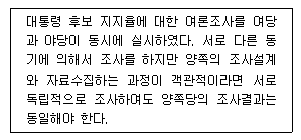
- 논리적 일관성
- 검증가능성
- 상호주관성
- 재생가능성
(정답률: 61%)
20. 사전검사(pretest)의 목적과 가장 거리가 먼 것은?
- 설문지의 확정
- 실제조사관리의 사전점검
- 사후조사결과와 비교
- 조사업무량의 조정
(정답률: 58%)
21. 실험설계에서 무작위화(randomization)를 사용하는 이유와 가장 거리가 먼 것은?
- 가설을 타당하게 검증하기 위해 필요한 장치이다.
- 실험처치 전에 실험집단과 통제집단의 상태를 동질하게 하기 위한 것이다.
- 종속변수의 체계적 변이(variation)를 극대화시키기 위한 방법이다.
- 실험에 간섭하는 외생변수를 통제하기 위한 방법이다.
(정답률: 64%)
22. 과학적 조사에 대한 설명과 가장 거리가 먼 것은?
- 가설은 설명적 연구에 있어서 필수적이다.
- 기존에 정보가 별로 없는 주제에 대해서는 탐색적 조사를 활용한다.
- 탐색적 연구의 결과로 명확한 결론을 내리는 것이 일반적이다.
- 연구집단에 대한 정확한 정보가 필요할 때에는 기술적 연구가 주로 활용된다.
(정답률: 68%)
23. 이론의 개념적 정의에 가장 적합한 내용은?
- 추상적인 성질을 띤 개념과 개념간의 관계를 말한다.
- 실증적인 조사를 위해 조작된 변수와 변수간의 관계를 말한다.
- 검증 가능한 두 개 이상의 가설 또는 명제간의 관계를 설명하는 논리적 체계이다.
- 특정의 사회현상을 설명하기 위해서 제시된 지수(indicator)의 총합을 말한다.
(정답률: 56%)
24. 다음 질문문항이 가지고 있는 가장 큰 문제점은?
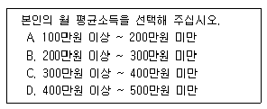
- 응답 범주들의 의미가 불분명하다.
- 응답 범주들의 간격이 일정하지 않다.
- 응답 범주들 간의 관계가 상호배타적이지 않다.
- 응답 가능한 상황들을 모두 포함하고 있지 않다.
(정답률: 76%)
25. 솔로몬 연구설계에 대한 옳은 설명을 모두 고른 것은?
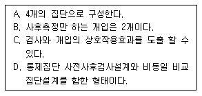
- A,B,C
- A,C
- B,D
- A,B,C,D
(정답률: 53%)
26. 개방형 질문의 장점으로 옳은 것은?
- 질문에 대한 응답이 표준화되어 있어 비교가 용이하다.
- 부호화와 분석이 용이하여 시간과 경비가 절약된다.
- 응답범주의 수적 제한을 받지 않는다.
- 고르기만 하면 되기 때문에 쉽게 응답할 수 있다.
(정답률: 81%)
27. 기술적(descriptive) 연구의 목적으로 가장 적합한 것은?
- 가설의 검증
- 이론의 확인
- 인과관계의 규명
- 현상에 대한 정확한 설명
(정답률: 58%)
28. 비표준화(비구조화) 면접의 장점으로 짝지어진 것은?
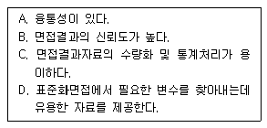
- A,B
- B,C
- C,D
- A,D
(정답률: 70%)
29. 수집된 자료의 편집과정에서 주의해야 할 사항과 가장 거리가 먼 것은?
- 자료의 편집과정은 전체자료에 대하여 일관성을 유지하면서 수행되어야 한다.
- 코드북의 내용에는 문자로 입력된 변수들은 포함되어서는 안된다.
- 개방형 응답항목은 코딩 과정에서 다양한 응답이 분류될 수 있도록 사전에 처리해야 한다.
- 완결되지 않은 응답은 응답자와 다시 접촉하여 완결하거나 그렇지 않으면 결측자료(missing data)로 처리한다.
(정답률: 70%)
30. 개별적인 사실들로부터 일반적인 원리를 이끌어내는 방법은?
- 추론법
- 연역법
- 귀납법
- 삽입법
(정답률: 74%)
2과목: 조사방법론 II
31. 표본에 대한 설명으로 옳은 것은?
- 표본은 오차가 없다.
- 표본은 대표성을 가져야 한다.
- 표본은 표본집단에서 추출해야 한다.
- 표본은 확률표집에 의해서만 추출해야 한다.
(정답률: 73%)
32. 측정시 발생하는 오차에 대한 설명으로 틀린 것은?
- 신뢰도는 체계적 오차(systematic error)와 관련된 개념이다.
- 무작위오차(random error)는 오차의 값이 다양하게 분산되어 있으며 상호상쇄하는 경향도 있다.
- 체계적 오차는 오차가 일정하거나 또는 치우쳐 있다.
- 무작위 오차는 측정대상, 측정과정, 측정수단, 측정자 등에 일시적으로 영향을 미쳐 발생하는 오차이다.
(정답률: 59%)
33. 단순무작위표집에 대한 설명으로 틀린 것은?
- 연구자의 사전 지식을 바탕으로 표본 집단을 선정한다.
- 모집단의 모든 조사단위에 표본으로 뽑힐 기회를 동등하게 부여한다.
- 모집단의 구성요소를 정확히 파악하여 명부를 작성하여야 한다.
- 이 방법은 시행하기 어렵다는 단점이 있다.
(정답률: 52%)
34. 동정심을 측정하기 위해 ‘지하도 입구의 거지에게 자선을 베푸는 정도’로 이를 정의하였다면 이러한 정의는?
- 개념적 정의
- 실제적 정의
- 조작적 정의
- 사전적 정의
(정답률: 67%)
35. 단순무작위표집법 대신에 집략표집법을 사용하는 가장 중요한 이유는?
- 표본표집을 좀 더 용이하게 하기 위해
- 비표본오차를 줄이기 위해
- 표본오차를 줄이기 위해
- 사전조사비용을 줄이기 위해
(정답률: 44%)
36. 측정의 신뢰도에 영향을 미치는 주요 요인과 가장 거리가 먼 것은?
- 측정도구
- 측정대상
- 측정동기
- 측정상황
(정답률: 62%)
37. 연구하고자 하는 대상에 대해 일정한 규칙에 따라 수치를 부여하는 것은?
- 관찰
- 척도
- 측정
- 가중치
(정답률: 57%)
38. 조사결과의 타당성을 확보하기 위한 방법과 가장 거리가 먼 것은?
- 통계적 통제
- 짝짓기(matching)
- 난선화(randomization)
- 표본크기 최소화
(정답률: 65%)
39. 사회계층간 사회적 거리(social distance)의 측정변수로 가장 부적합한 것은?
- 상류층과 하류층간의 소득격차
- 사회계층간 교육수준의 차이
- 상류층과 중류층간의 거주지역의 차이
- A기업과 B기업에서 사용하는 언어의 차이
(정답률: 71%)
40. 다음 중 측정수준이 다른 하나는?
- 기온
- 신장
- 체중
- 소득
(정답률: 63%)
41. 신뢰도와 타당도에 대한 설명으로 틀린 것은?
- 타당도가 있는 측정은 항상 신뢰도가 있다.
- 신뢰도가 없는 측정은 항상 타당도가 있다.
- 신뢰도가 있는 측정은 타당도가 있을 수도 있고 없을 수도 있다.
- 타당도가 없는 측정은 신뢰도가 있을 수도 있고 없을 수도 있다.
(정답률: 62%)
42. 표본추출과 관련된 용어 설명으로 틀린 것은?
- 통계치(statistic) : 모집단 내 변수의 값
- 모집단(population) : 연구하고자 하는 이론상의 전체 집단
- 표본(sample) : (연구)모집단 중 연구대상으로 추출된 일부
- 표본오차(sampling error) : 표본 수치와 모집단 수치의 차이
(정답률: 64%)
43. 안정성계수(coefficient of stability)가 사용되는 검사 신뢰도는?
- 검사-재검사 신뢰도
- 내적 일치성
- 동형검사 신뢰도
- 내용타당도
(정답률: 37%)
44. 모집단을 여러 가지 이질적인 구성요소를 포함하는 여러 개의 집단으로 구분한 다음, 이를 표집단위로 표집하는 방법은?
- 단순무작위 표집
- 층화표집
- 집략표집
- 계통표집
(정답률: 55%)
45. 두 변수간의 사실적인 관계를 약화시키거나 소멸시켜 버리는 검정변수는?
- 선행변수(antecedent variable)
- 매개변수(intervening variable)
- 억제변수(suppressor variable)
- 왜곡변수(distorter variable)
(정답률: 54%)
46. 표본추출법(sampling method)에 대한 설명과 가장 거리가 먼 것은?
- 표본추출은 모집단에 대한 정보를 파악하는데 목적이 있다.
- 표본의 크기는 클수록 좋다.
- 표본추출은 시간과 비용을 절약하기 위한 것이다.
- 표본은 모집단을 대표할 수 있도록 대표성이 중요하다.
(정답률: 58%)
47. 확률표집에 대한 설명으로 틀린 것은?
- 확률표집에 기본이 되는 것은 단순무작위 표집이다.
- 확률표집에서는 모집단의 모든 요소가 뽑힐 확률이 “0”이 아닌 확률을 가진다는 것을 전제한다.
- 확률표집은 항상 불완전한 것이어서 표본으로부터 모집단의 특성을 추론하는데 제약이 있기 마련이다.
- 확률표집의 종류로 할당표집이 있다.
(정답률: 63%)
48. 판단표본추출에 대한 설명으로 틀린 것은?
- 모집단에 대한 연구자의 사전지식을 바탕으로 표집하는 것이다.
- 연구대상자의 일부는 쉽게 식별할 수 있지만 모집단 전체를 모두 확인하는 일이 거의 불가능할 경우 사용할 수 있다.
- 판단표본추출법은 비용이 적게 들고 편리하고 신속하다.
- 판단표본추출법은 아이디어, 통찰, 가설 등을 도출하기 위한 탐험적 조사에 적합하다.
(정답률: 46%)
49. 개념적 정의에 대한 설명으로 틀린 것은?
- 순환적인 정의를 해야 한다.
- 적극적 혹은 긍정적인 표현을 써야 한다.
- 정의하려는 대상이 무엇이든 그것만의 특유한 요소나 성질을 적시해야 한다.
- 뜻이 분명해서 누구나 알아들을 수 있는 의미를 공유하는 용어를 써야 한다.
(정답률: 57%)
50. A후보와 B후보의 이미지 비교 프로파일을 보여주는 아래의 그림에서 사용된 척도는?
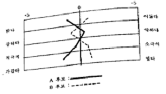
- 서스톤 척도
- 리커트 척도
- 거트만 척도
- 의미분화 척도
(정답률: 63%)
51. 총화평정척도에 대한 설명과 가장 거리가 먼 것은?
- 일반적으로 예비적 문항의 선정 단계를 거쳐서 최종의 척도를 구성하는 이중단계를 거친다.
- 평가자의 주관이 개입될 가능성이 크다.
- 리커트 척도라고도 한다.
- 전체 문항에 대한 응답의 총 평점이 태도의 측정치가 된다.
(정답률: 44%)
52. 신뢰도 평가와 관련되는 개념이 아닌 것은?
- 안정성
- 내적 일관성
- 자료축약 가능성
- 예측가능성
(정답률: 58%)
53. 표집 대상이 되는 소수의 응답자들을 찾아내어 면접하고, 이들을 정보원으로 다른 응답자를 소개 받는 절차를 반복하는 표집방법은?
- 할당표집
- 눈덩이표집
- 판단표집
- 편의표집
(정답률: 68%)
54. 집략표집(Cluster Sampling)에 대한 설명으로 옳은 것은?
- 집략 간에는 동질적, 집략 내에서는 이질적으로 구성한다.
- 집략 간에는 이질적, 집략 내에서는 동질적으로 구성한다.
- 집략 간에는 이질적, 집략 내에서도 이질적이로 구성한다.
- 집략 간에는 동질적, 집략 내에서도 동질적으로 구성한다.
(정답률: 58%)
55. 다음 표본추출 방법 중 성격이 다른 하나는?
- 편의표본추출법(convenicence sampling)
- 할당표본추출법(quota sampling)
- 의도적표본추출법(purposive sampling)
- 단순무작위표본추출법(simple random sampling)
(정답률: 70%)
56. 다음은 어떤 척도에 대한 설명인가?
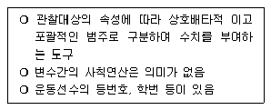
- 명목척도
- 서열척도
- 등간척도
- 비율척도
(정답률: 69%)
57. 다음에서 설명하고 있는 표본추출방법은?
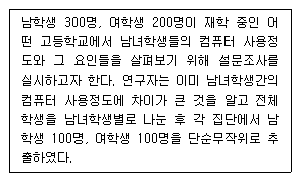
- 할당(quota)표집
- 집락(cluster)표집
- 층화(stratified)표집
- 의도적(purposive)표집
(정답률: 48%)
58. 측정오차의 원인에 대한 설명과 가장 거리가 먼 것은?
- 측정자의 잘못으로 발생할 수 있다.
- 측정자나 피측정자가 지니는 지적 사고력이나 판단력에 기인한다.
- 측정소재와 관련되거나 시·공간에 제약 때문에 발생한다.
- 사회과학에서 측정오차발생은 예외적 현상이다.
(정답률: 58%)
59. 연구주제와 관련된 가능한 많은 진술들을 수집하여 평가자들로 하여금 판단토록 한 다음 그 결과를 바탕으로 문항을 선정하는 척도는?
- 거트만 척도
- 리커트 척도
- 서스톤 척도
- 총화평정 척도
(정답률: 51%)
60. 측정(measurement)에 대한 설명과 가장 거리가 먼 것은?
- 변수에 대한 조작적 정의에 입각해 이루어진다.
- 하나의 변수에 대한 관찰값은 동시에 두 가지 속성을 지닐 수 없다.
- 이론과 현실을 연결시켜주는 매개체이다.
- 결험적으로 관찰 가능한 것을 추상적 개념으로 바꾸어 놓는 과정이다.
(정답률: 55%)
3과목: 사회통계
61. 다음과 같이 주어졌을 때 편차 제곱함은?
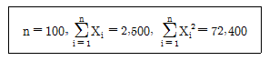
- 9800
- 9900
- 10000
- 10100
(정답률: 44%)
62. 어느 공장에서 생산되는 나사못의 10%가 불량품이라고 한다. 이 공장에서 만든 나사못 중 400개를 임의로 뽑았을 때 불량품 개수 X의 평균과 표준편차는?
- 평균 : 30, 표준편차 : 6
- 평균 : 40, 표준편차 : 36
- 평균 : 30, 표준편차 : 36
- 평균 : 40, 표준편차 : 6
(정답률: 37%)
63. 다음은 단순회귀분석에서의 분산분석결과이다. 결정계수를 구하면?
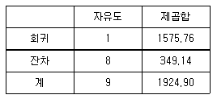
- 0.15
- 0.18
- 0.82
- 0.94
(정답률: 52%)
64. 어느 대학교 학생들의 흡연율을 조사하고자 한다. 실제 흡연율과 추정치의 차이가 5% 이내라고 90% 정도의 확신을 갖기 위해서는 표본의 크기를 최소 얼마 이상으로 하여야 하는가? (단 Z0.1=1.282, Z0.⑤=1.645, Z0.025=1.960)
- 165
- 192
- 271
- 385
(정답률: 40%)
65. 중회귀모형에서 결정계수에 대한 설명으로 옳은 것은?
- 결정계수는 -1과 1사이의 값을 갖는다.
- 상관계수의 제곱은 결정계수와 동일하다.
- 설명변수를 통한 반응변수에 대한 설명력을 나타낸다.
- 변수가 추가될 때 결정계수는 감소한다.
(정답률: 28%)
66. 통계적 가설검정에 대한 설명으로 옳지 않은 것은?
- 귀무가설은 표본에 근고한 강력한 증거에 의하여 입증하고자 하는 가설이다.
- 기각역은 귀무가설을 기각하게 되는 검정통계량의 관측값의 영역이다.
- 유의수준은 제1종 오류를 범할 확률의 최대허용한계이다.
- 제2종 오류는 대립가설이 참임에도 불구하고 귀무가설을 기각하지 못하는 오류이다.
(정답률: 40%)
67. 확률변수 X는 평균이 μ이고 표준편차가 σ(≠0)인 정규분포를 따른다. 아래 설명 중 틀린 것은?
- 왜도는 0이다.
- X의 표준화된 확률변수는 표준정규분포를 따른다.
- P(μ-σ< X < μ+σ)=0.683 이다.
- X2은 자유도가 2인 카이제곱분포를 따른다.
(정답률: 48%)
68. 행변수가 M개인 범주를 갖고 열변수가 N개의 범주를 갖는 분할표에서 행변수와 열변수가 서로 독립인지를 검정하고자 한다. (i, j) 셀의 관측도수를 Oij , 귀무가설 하에서의 기대도수의 추정치를
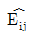
라 할 때 이 검정을 위한 검정통계량은?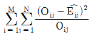
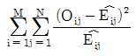
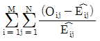
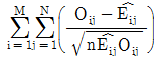
(정답률: 53%)
69. A도시에서는 실업률이 5.5%라고 발표하였다. 관련민간단체에서는 실업률 5.5%가 너무 낮게 추정된 값이라고 여겨 이를 확인하고자 노동력 인구 중 520명을 임의로 추출하여 조사한 결과 39명이 무직임을 알게 되었다. 이를 확인하기 위한 검정을 수행할 때 검정통계량의 값은?
- -2.58
- 1.75
- 1.96
- 2.00
(정답률: 28%)
70. 5개의 동전을 던져서 앞면이 나타날 개수를 X라 할 때 X의 평균과 분산은?
- 2.5, 1.25
- 2.5, 1.252
- 3.0, 1.25
- 3.0, 1.252
(정답률: 51%)
71. 모평균의 신뢰구간에 대한 설명으로 틀린 것은?
- 일반적으로 표본크기 n이 크면
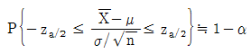
이다. - 표본의 크기가 클수록 신뢰구간의 폭은 좁아진다.
- 모평균 95% 신뢰구간이 (-10,10)이라는 의미는 모평균이 -10에서 10사이에 있을 확률이 95%라는 의미이다.
- 동일한 표본하에서 신뢰수준을 높이면 신뢰구간의 폭은 넓어진다.
(정답률: 32%)
72. 통계학 과목의 기말고사 성적 평균(mean)이 40점, 중위값(median)이 38점이었다. 점수가 너무 낮아서 담당 교수는 12점의 기본점수를 더해 주었다. 새로 산정한 점수의 중위값은?
- 40점
- 42점
- 50점
- 52점
(정답률: 66%)
73. 처리별 반복수가 다른 일원배치법 실험에 의하여 얻어진 분산분석표가 다음과 같다. 이때 ㉣와 ㉤의 값을 순서대로 열거하면?
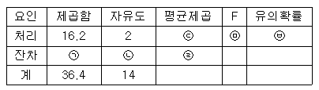
- 32.2, 0.57
- 32.2, 50.4
- 1.68, 8.1
- 1.68, 4.82
(정답률: 54%)
74. 일원분산분석 모형에서 오차항에 대한 가정에 해당되지 않는 것은?
- 정규성
- 독립성
- 일치성
- 등분산성
(정답률: 42%)
75. 표준정규분표에서 오른쪽 꼬리부분의 면적 a가 되는 점을 za라 하고, 자유도가 v인 t분포에서 오른쪽 꼬리부분의 면적이 a가 되는 점을 t(v,a)라 하고, Z는 표준정규분포, r은 자유도가 v인 t분포를 따른다고 할 때 다음 설명 중 틀린 것은? (단, P > za=a , P(T > t(v,a)=a 이다.)
- v에 관계없이 Z(0.⑤) ＜ t(v, 0.⑤) 다
- t(5,0.⑤)=-t(v, 0.⑤) 이다.
- t(5,0.⑤)<-t(10, 0.⑤)
- v가 아주 커지면 t(v,a)은 Za와 거의 같아진다.
(정답률: 34%)
76. 어느 기업의 작년도 대졸 신입사원 임금의 평균이 200만원이라고 한다. 금년도 대졸 신입사원 중 100명을 조사하였더니 평균이 209만원이고 표준편차가 50만원이었다. 금년도 대졸 신입사원의 임금이 올랐는지를 유의수준 5%에서 검정한다면, 검정통계량의 값과 검정결과는? (단, P(|Z|>1.64)=0.10. P(|Z|>1.96=0.⑤, P(|Z|>2.58)=0.01이다.)
- 검정통계량 : 1.8, 검정결과 : 대졸신입사원 임금이 작년도에 비하여 올랐다고 할 수 있다.
- 검정통계량 : 1.8, 검정결과 : 대졸신입사원 임금이 작년도에 비하여 올랐다고 할 수 없다.
- 검정통계량 : 2.0, 검정결과 : 대졸신입사원 임금이 작년도에 비하여 올랐다고 할 수 있다.
- 검정통계량 : 2.0, 검정결과 : 대졸신입사원 임금이 작년도에 비하여 올랐다고 할 수 없다.
(정답률: 32%)
77. 4지 택일형 문제 10개가 있다. 각 문제에 임의로 답을 써 넣을 때 정답을 맞힌 개수 X의 분포는?
- 정규분포
- 이항분포
- t분포
- F분포
(정답률: 45%)
78. 평균이 μ이고, 표준편차가 σ인 모집단으로부터 크기가 n인 확률표본을 취할 때, 표본평균
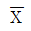
의 분포에 대한 설명으로 옳은 것은?- 표본의 크기가 커짐에 따라 접근적으로 평균이 μ이고 표준편차가 σ/√n인 정규분포를 따른다.
- 표본의 크기가 커짐에 따라 접근적으로 평균이 μ이고 표준편차가 σ/n인 정규분포를 따른다.
- 모집단의 확률분포와 동일한 분포를 따르되, 평균은μ이고 표준편차는 σ/√n이다.
- 모집단의 확률분포와 동일한 분포를 따르되, 평균은 μ이고 표준편차는 σ/n이다.
(정답률: 41%)
79. 두 개의 정규모집단으로부터 추출한 독립인 확률표본에 기초하여 모분산에 대한 가설
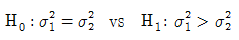
을 검정하고자 한다. 검정방법으로 옳은 것은?- t-검정
- z-검정
- x2-검정
- F-검정
(정답률: 40%)
80. 분산분석에 대한 설명으로 옳은 것은?
- 분산분석이란 각 처리집단의 분산이 서로 같은지를 검정하기 위한 방법이다.
- 비교하려는 처리집단이 k개 있으면 처리에 의한 자유도는 k-2가 된다.
- 두 개의 요인이 있을 때 각 용인의 주효과를 알아보기 위해서는 요인간 교호작용이 있어야 한다.
- 일원배치분산분석에서 일원배치의 의미는 반응변수에 영향을 주는 요인이 하나인 것을 의미한다.
(정답률: 46%)
81. 어느 회사는 4개의 철강공급업체로부터 철판을 공급받는다. 각 공급업체들이 납품하는 철판의 품질을 평가하기 위해 인장강도(kg/psi)를 각 3회씩 측정하여 다음의 중간결과를 얻었다. 4개의 공급업체들이 납품하는 철강의 품질에 차이가 없다는 가설을 검정하기 위한 F-비는? (단,
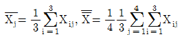
)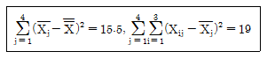
- 0.816
- 2.175
- 4.895
- 6.526
(정답률: 15%)
82. 확률변수 X의 확률분포가 평균의 μ이고 표준편차가 σ인 정규분포일 때 다음 설명 중 틀린 것은?
- Y=aX+b(a≠0) 일 때 확률변수 Y는 N(aμ+b, a2σ2)
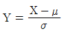
는 표준정규분포를 따른다.- 평균, 중위수, 최빈수가 모두 μ 이다.
- Y=aX+b(a≠0) 일 때 확률변수 Y의 표준편차는 aσ이다.
(정답률: 33%)
83. 검정력(power)에 대한 설명으로 옳은 것은?
- 귀무가설이 옮음에도 불구하고 이를 기각할 확률이다.
- 옳은 귀무가설을 채택할 확률이다.
- 대립가설이 참일 때 귀무가설을 기각할 확률이다.
- 거짓인 귀무가설을 채택할 확률이다.
(정답률: 51%)
84. 공정한 동전을 5회 던질 때, 앞면이 적어도 1회 이상 나타날 확률은?
- 1/32
- 5/32
- 15/32
- 31/32
(정답률: 48%)
85. 두 사건, A,B 에 대해 P(A)>0, P(B)>0, P(Bc)>0 일 때 다음 중 성립하지 않는 것은?
- A⊂B 이면 P(A)≤P(B) 이다.
- A∩B=ø 이면 A와 B는 서로 배반사건이다.
- P(A|B)=P(A) 이면 A와 B는 서로 독립사건이다.
- P(A|B)+P(A|BC)=1 이다.
(정답률: 39%)
86. 다음 분산분석표에 대응하는 통계적 모형으로 적합한 것은?
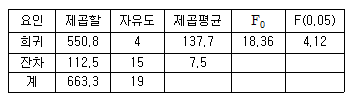
- 종속변수가 1개인 단순회귀모형
- 종속변수가 3개인 중회귀모형
- 독립변수가 4개인 중회귀모형
- 수준수가 4인 일원배치모형
(정답률: 36%)
87. 크기 n의 표본에 근거한 모수 θ 의 추정량을
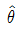
이라 할 때 다음 설명으로 틀린 것은?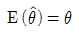
일 때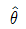
을 불편추정량이라 한다.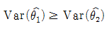
일 때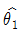
이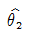
보다 유효하다고 한다.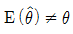
일 때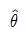
을 편의 추정량이라 한다.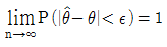
일 때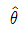
을 일치추정량이라 한다.
(정답률: 39%)
88. 어느 학교에서 A반과 B반의 영어점수는 평균과 범위가 모두 동일하고 표준편차는 A반이 15점, B반이 5점이었다. 이 자료에 근거하여 내릴 수 있는 결론으로 옳은 것은?
- A반 학생들의 점수가 B반 학생보다 평균점 근처에 더 많이 몰려 있다.
- B반 학생들의 점수가 A반 학생보다 평균점 근처에 더 많이 몰려 있다.
- (평균점수±1X표준편차)의 범위 안에 들어 있는 학생들의 수는 A반의 경우가 B반의 경우 보다 3배가 더 많다.
- (평균점수±1X표준편차)의 범위 안에 들어 있는 학생들의 수는 A반의 경우가 B반의 경우 1/3밖에 되지 않는다.
(정답률: 61%)
89. 자동차부품을 생산하는 회사에서 품질을 관리하기 위하여 생산된 제품 가운데 100개를 추출하여 조사하였다. 그 중 불량품의 개수를 X라 할 때, X의 기댓값이 5이면 X의 분산은?
- 0.⑤
- 0.475
- 4.75
- 9.5
(정답률: 45%)
90. 서로 독립인 확률변수 X와 Y의 분산이 각각 2와 1일 때, X+5Y의 분산은?
- 0
- 7
- 17
- 27
(정답률: 44%)
91. (x, y)의 상관계수가 0.5일 때,(2x+3, -3y-4)와 (-3x+4, -2x-2)의 상관계수는?
- 0.5, 0.5
- -0.5, 0.5
- 0.5, -0.5
- -0.5, -0.5
(정답률: 41%)
92. 분산을 모르는 정규모집단으로부터의 확률표본에 기초하여 모평균에 대한 신뢰구간을 구하고자 한다. 표본크기가 충분히 크지 않을 때 신뢰구간을 구하기 위해 사용되는 분포는?
- t분포
- 정규분포
- 이항분포
- F분포
(정답률: 48%)
93. 모 상관계수가 μ인 이변량 정규분포를 따르는 두 변수에 대한 자료 (xi, yi)(i=1,2,∙∙∙, n) 에 대하여 표본상관계수
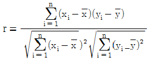
을 이용하여 귀무가설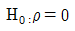
을 검정하고자 한다. 이때 사용되는 검정통계량과 그 자유도는?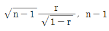
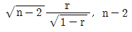
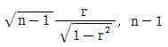
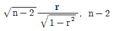
(정답률: 27%)
94. 두 명목범주형 변수 사이의 연관성을 보고자 할 때 가장 적합한 것은?
- 피어슨 상관계수
- 순위(스피어만) 상관계수
- 산점도
- 분할표(교차표)
(정답률: 27%)
95. 크기가 10인 (x, y) 자료로부터 단순선형회귀분석을 수행한 결과
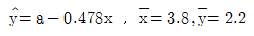
를 얻었다. a의 값은?- 1.580
- 2.038
- 4.016
- 4.861
(정답률: 42%)
96. 다음과 같은 자료가 주어져 있다. 최소제곱법에 의한 회귀직선은?
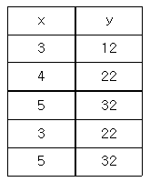
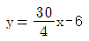
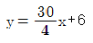
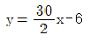
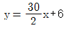
(정답률: 33%)
97. 정규모집단 N(μ, 25)로부터 크기 25인 확률 표본에 근거하여 구한 평균이 110이었다. 모집단 평균의 95% 신뢰구간은? (단,
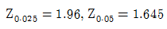
이다.)(오류 신고가 접수된 문제입니다. 반드시 정답과 해설을 확인하시기 바랍니다.)- (108.04, 111.96)
- (108.00, 112.00)
- (108.36, 111.65)
- (108.32, 111.68)
(정답률: 43%)
98. 단순회귀분석에서 회귀직선의 추정식이
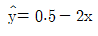
와 같이 주어졌을 때 다음 설명 중 틀린 것은?- 반응변수는 y이고 설명변수는 x이다.
- 설명변수가 한 단위 증가할 때 반응변수는 2단위 감소한다.
- 반응변수와 설명변수의 상관계수는 0.5이다.
- 설명변수가 0일 때 반응변수의 예측값은 0.5이다.
(정답률: 46%)
99. 어느 포장기계를 이용하여 생산한 제품의 무게는 평균이 240g, 표준편차는 8g인 정규분포를 따른다고 한다. 이 기계에서 생산한 제품 25개의 평균무게가 242g 이하일 확률은? (단, Z는 표준정규분포를 따르는 확률변수이다.)
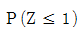
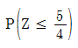
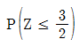
(정답률: 54%)
100. 대표값에 대한 설명으로 옳은 것은?
- 최빈수는 반드시 하나만 존재한다.
- 중위수는 평균보다 항상 크다.
- 평균운 중위수보다 이상치에 대해 민감하다.
- 오른쪽으로 긴 꼬리의 분포에서 평균은 중위수보다 작다.
(정답률: 58%)